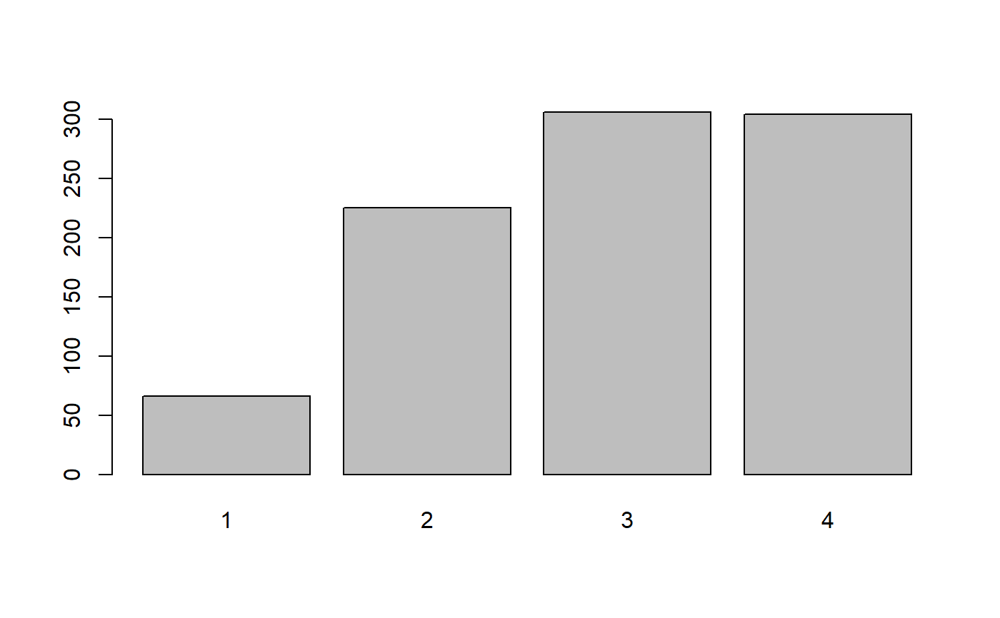

Retrieve variable label(s) of labelled data
get_label.RdThis function returns the variable labels of labelled data.
get_label(x, ..., def.value = NULL, case = NULL)
Arguments
| x | A data frame with variables that have label attributes (e.g.
from an imported SPSS, SAS or STATA data set, via |
|---|---|
| ... | Optional, names of variables, where labels should be retrieved.
Required, if either data is a data frame and no vector, or if only
selected variables from |
| def.value | Optional, a character string which will be returned as label
if |
| case | Desired target case. Labels will automatically converted into the
specified character case. See |
Value
A named character vector with all variable labels from the data frame or list;
or a simple character vector (of length 1) with the variable label, if x is a variable.
If x is a single vector and has no label attribute, the value
of def.value will be returned (which is by default NULL).
Note
var_labels is an alternative way to set variable labels,
which follows the philosophy of tidyvers API design (data as first argument,
dots as value pairs indicating variables)
See also
See vignette Labelled Data and the sjlabelled-Package
for more details; set_label to manually set variable labels or get_labels
to get value labels; var_labels to set multiple variable
labels at once.
Examples
# import SPSS data set # mydat <- read_spss("my_spss_data.sav", enc="UTF-8") # retrieve variable labels # mydat.var <- get_label(mydat) # retrieve value labels # mydat.val <- get_labels(mydat) data(efc) # get variable lable get_label(efc$e42dep)#> [1] "elder's dependency"# alternative way get_label(efc)["e42dep"]#> e42dep #> "elder's dependency"# 'get_label()' also works within pipe-chains efc %>% get_label(e42dep, e16sex)#> e42dep e16sex #> "elder's dependency" "elder's gender"# set default values get_label(mtcars, mpg, cyl, def.value = "no var labels")#> mpg cyl #> "no var labels" "no var labels"# get value labels to annotate barplot barplot(table(efc$e42dep), names.arg = get_labels(efc$e42dep), main = get_label(efc$e42dep))#> [1] "elder's dependency" "elder's gender" "relationship to elder"# use case conversion for human-readable labels data(iris) get_label(iris, def.value = colnames(iris))#> Sepal.Length Sepal.Width Petal.Length Petal.Width Species #> "Sepal.Length" "Sepal.Width" "Petal.Length" "Petal.Width" "Species"#> Sepal.Length Sepal.Width Petal.Length Petal.Width Species #> "Sepal Length" "Sepal Width" "Petal Length" "Petal Width" "Species"